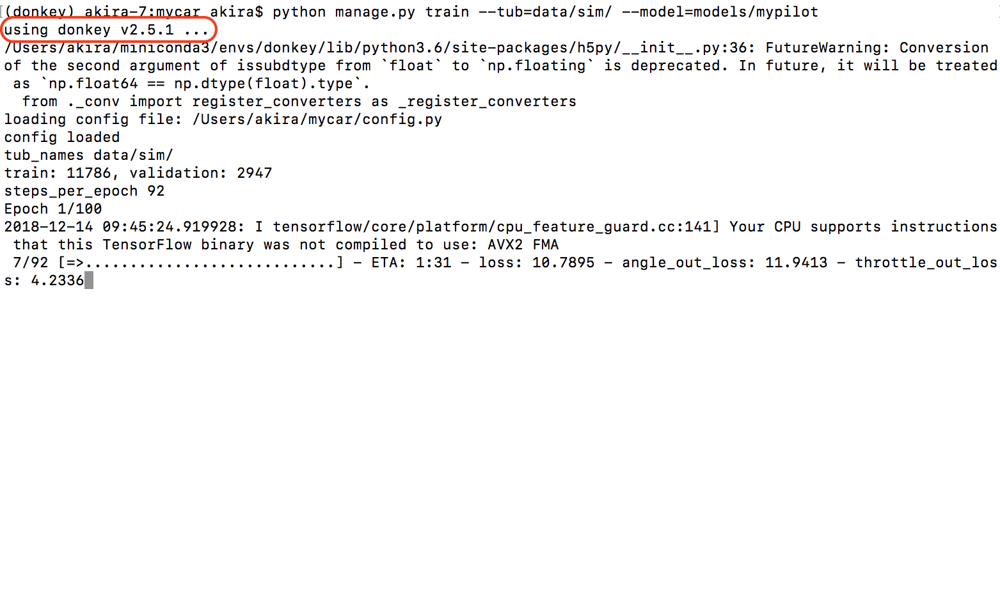

Donkey Car 学習
Summary
Donkey Car Simulatorとの連携は、DonkeyCar v2.5.7では廃止。そのため、Donkey Car Simulatorと連携して動作させるためには、Revisionは、344127b まで戻す必要がある。
Donkey Carの学習環境を構築します。Donkey Carの学習は、RapPi3側ではなく、PC側でおこないます。一般的なPCで20-30分程度の学習、GPU搭載のPCで数分の学習がおこなわれます。
学習用データの準備
Donkey SimulatorもしくはDonkey Carで作成した教師データのデータ・セットを、プロジェクトにコピーします。
1 2 | mkdir ~/mycar/data/sim cp -r /Application/donkey_sim.app/log/* ~/mycar/data/sim/ |
Warining
cp実行時に-rオプションをつける。ファイル毎にコピーするとargument list too long でエラーが発生。
学習
1 2 | cd ~/mycar python manage.py train --tub=data/sim/ --model=models/mypilot |

学習済みデータはmypilotに保存されます。
追加で学習される場合は、--base_modelオプションで学習済みモデルを指定して、続きから学習させる。
1 | python manage.py train --tub=data/sim/ --model=models/newpilot --base_model=models/mypilot
|
ソースコード
~/workspace_donkey/donkeycar/parts/keras.py
Defaultの設定では、下記コードで学習を実施している。
1 2 3 4 5 6 7 8 9 10 11 12 13 14 15 16 17 18 19 20 21 22 23 24 25 26 27 28 29 30 31 32 33 34 35 36 | def default_categorical(): img_in = Input(shape=(120, 160, 3), name='img_in') # First layer, input layer, Shape comes from camera.py resolution, RGB x = img_in x = Convolution2D(24, (5, 5), strides=(2, 2), activation='relu')( x) # 24 features, 5 pixel x 5 pixel kernel (convolution, feauture) window, 2wx2h stride, relu activation x = Convolution2D(32, (5, 5), strides=(2, 2), activation='relu')( x) # 32 features, 5px5p kernel window, 2wx2h stride, relu activatiion x = Convolution2D(64, (5, 5), strides=(2, 2), activation='relu')( x) # 64 features, 5px5p kernal window, 2wx2h stride, relu x = Convolution2D(64, (3, 3), strides=(2, 2), activation='relu')( x) # 64 features, 3px3p kernal window, 2wx2h stride, relu x = Convolution2D(64, (3, 3), strides=(1, 1), activation='relu')( x) # 64 features, 3px3p kernal window, 1wx1h stride, relu # Possibly add MaxPooling (will make it less sensitive to position in image). Camera angle fixed, so may not to be needed x = Flatten(name='flattened')(x) # Flatten to 1D (Fully connected) x = Dense(100, activation='relu')(x) # Classify the data into 100 features, make all negatives 0 x = Dropout(.1)(x) # Randomly drop out (turn off) 10% of the neurons (Prevent overfitting) x = Dense(50, activation='relu')(x) # Classify the data into 50 features, make all negatives 0 x = Dropout(.1)(x) # Randomly drop out 10% of the neurons (Prevent overfitting) # categorical output of the angle angle_out = Dense(15, activation='softmax', name='angle_out')( x) # Connect every input with every output and output 15 hidden units. Use Softmax to give percentage. 15 categories and find best one based off percentage 0.0-1.0 # continous output of throttle throttle_out = Dense(1, activation='relu', name='throttle_out')(x) # Reduce to 1 number, Positive number only model = Model(inputs=[img_in], outputs=[angle_out, throttle_out]) model.compile(optimizer='adam', loss={'angle_out': 'categorical_crossentropy', 'throttle_out': 'mean_absolute_error'}, loss_weights={'angle_out': 0.9, 'throttle_out': .01}) return model |